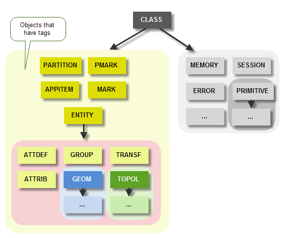
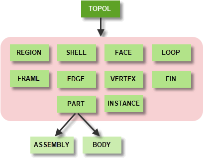
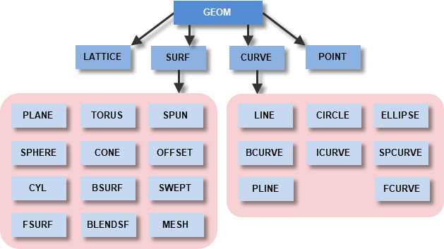
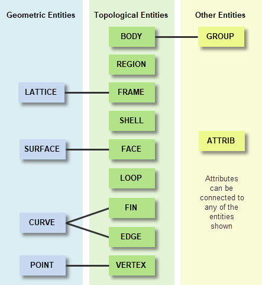

| |
Parasolid Concepts |
| <<< Introduction To Parasolid | Chapters | Overview Of This Manual >>> |
This chapter explains fundamental concepts that you need to understand in order to use Parasolid. The information in this chapter is vital to understanding Parasolid and you should read and understand it.
Items of data that may be passed between Parasolid and your application are called objects. Each object belongs to a class that defines objects of a common type. Classes in Parasolid conform to a hierarchical tree structure as outlined in Figure 2-1; for clarity, we have not shown every class in this diagram, and additional classes are indicated by a boxed ellipsis (...). The top-level class is called CLASS and is a superclass of all other Parasolid classes. Objects from the classes that are highlighted in the diagram all have tags that identify them; see Section 2.4.2, “Tags” for more information.
Figure 2-2 and Figure 2-3 show the subclasses of two important classes used in Parasolid modeling: TOPOL and GEOM. These classes are described in detail in Chapter 14, “Model Structure”.
Figure 2-1 An outline of the Parasolid class hierarchy
Figure 2-2 The TOPOL class and its subclasses
Figure 2-3 The GEOM class and its subclasses
All PK interface functions belong to a class and can be used within subclasses of that class, where appropriate. The class of a function defines its purpose, as shown in the following table:
All PK functions have names of the form PK_ <CLASS>_ <text>.
Some of the most common function names are constructed from a standard set of verbs, as shown below:
Every function has a fixed set of arguments: some are used to supply data, and others are used to return information. Arguments must never be used for both purposes; if a pointer to the same memory space is passed as both input and output arguments, the behaviour of the function is undefined. Input arguments are never modified as a result of a PK function call.
In some functions, arrays of returned data are optional. Parasolid does not attempt to compute or return this information if the NULL pointer is passed as the pointer for the returned array.
Argument types are simple values, arrays, and structures built from the following list of primitive types:
|
the usual C convention for a double precision floating point number |
|
|
the usual C convention for a null-terminated character string |
|
|
true or false, with values 1 and 0 respectively: #define PK_LOGICAL_true 1 #define PK_LOGICAL_false 0 |
|
|
a 3-space vector with coordinate fields (3 doubles): typedef struct {double coord[3];} PK_VECTOR_t; |
|
|
same as PK_VECTOR_t, but it must be a unit vector (enforced by argument checking) |
|
|
a real interval ordered low/high (2 doubles): typedef struct {double value[2];} PK_INTERVAL_t; |
|
|
a rectangular box aligned with the world coordinate axes, representing the minimum and maximum extremes of the box (6 doubles): typedef struct {double coord[6];} PK_BOX_t; |
|
|
a surface parameter pair of u and v coordinates: typedef struct {double param[2];} PK_UV_t; |
|
|
a surface parameter space box: typedef struct {double param[4];} PK_UVBOX_t; |
All input arguments must be specified, even if you only require the default behaviour. See Section 9.2, “PK functions” for more information.
Some input arguments can be considered optional and you provide them via a separate options structure (named with an o_t suffix). Every option in the structure must be specified explicitly, even if you only require the default behaviour. To do this, your application should call the relevant macro (named with an o_m suffix) and then change the settings of individual non-default options before passing the structure to the function. For more information on using option structures, see Chapter 9, “PK Interface Programming Concepts”.
Every Parasolid function returns an error code as the function value to the calling routine. This value broadly indicates whether the intended operation has succeeded (if zero) or failed (non-zero); in the case of failure, the error code describes the probable cause. In other situations, more details concerning the nature of the failure can be returned via the output arguments of the function. In these cases, a value of zero is returned as the error code, and the corresponding output arguments must also be examined.
To ease the handling of situations where non-zero error codes are returned, your application can register an error handling function with Parasolid. This function is called automatically whenever an error with a non-zero code occurs, and can be used to perform any clean-up operations needed as a result of the error.
If you wish, your application can also register signal handlers with the operating system to deal with run-time errors and user interrupts. For more information about error and signal handling, see Chapter 121, “Error Handling”.
Parasolid models are made up of items known as entities that are objects belonging to the ENTITY class. For example, a part consisting of a single cylindrical body contains (at least):
Generally speaking, an entity is any identifiable component of a model. Any model can be represented as a network of entities that are linked by complex relationships. Figure 2-4 shows the entities available in a body, together with some of the relationships between them. The classes corresponding to the topological and geometric entities shown are given in Figure 2-2 and Figure 2-3.
Figure 2-4 The entities of the kernel model
For more information about the entities available in Parasolid, and the relationships between them, see Chapter 14, “Model Structure”.
Every object has one or more classes
associated with it. Classes are specified and reported using
tokens which are defined as constant values in the include file
parasolid_kernel.h
.
Token names in the PK Interface are of one of the following two forms:
The upper-case string <CLASS> denotes the top-level class to which the token applies; the lower-case string <text> describes the meaning of the token. Tokens with names of the form PK_ <CLASS>_ <text> can also apply to subclasses of <CLASS> but not (in general) to classes outside this tree. If the token can apply to all classes, the word <CLASS> is omitted and the name is of the form PK_ <text>.
For example, a conical surface object may be classified successively as belonging to:
Tokens are used in various ways:
Tokens are listed in the PK Interface Programming Reference Manual (Part 2 - Interface Structures, Tokens & Error Codes):
|
Note: In general, tags and geometric parameters are common to both the PK and KI interfaces. PK error codes and KI ifails occasionally differ. |
Tokens also have numerical values. Since these values may change in future versions, you should use only token names in your code. These will continue to work even if the numerical value changes.
However, with the exception of error tokens (PK_ERROR_sf_t), you cannot interrogate the PK itself for token names: PK functions only return the numerical values, which you can compare with the names published in the following places:
parasolid_kernel.h
Tags are used to identify items (PK_ITEM_t) within a Parasolid session. These may be entities (that Parasolid works on), appitems (that identify data in your own application), or partitions and other items that facilitate rollback.
Every item in a model has a tag associated with it. A tag is created by the kernel when the item is created; the kernel also uses them to return entities from a model to your application. Each tag in a session is unique, so that every item can be identified; tag numbers are never reused within a session. However, tags are not consistent across different sessions: if the same items are loaded into a different Parasolid session, they are not necessarily assigned the same tags.
Tags are held in integer variables that PK functions use to identify items; thus the maximum number of tags available for use within a session is limited by the size of integer variables in C on the platform in question. To find out the number of tags remaining in a session at any point, you can call PK_SESSION_ask_tags_remaining.
A tag only has meaning (is alive) while the item to which it refers still exists in internal memory. If an item is:
then its tag is considered dead. It is your application’s responsibility to remember which tags are alive and which are dead; PK_APPITEM_is, PK_ENTITY_is, PK_MARK_is, PK_PARTITION_is, and PK_PMARK_is can be used to determine whether a particular tag is alive or dead. If dead tags are passed to the PK then it traps them and returns the error PK_ERROR_not_an_entity (if argument checking is enabled).
There is a special constant tag called PK_ENTITY_null, which is defined in the include file
parasolid_kernel.h
. It is a tag to which no entity corresponds, and its principal use is that various PK functions return it when there is no appropriate entity to return.
For example, when requesting the tag of the surface attached to a face; if the face has no corresponding surface, the function returns PK_ENTITY_null.
Many modeling operations result in entities being created, deleted, or changed. Changes such as these have implications on what happens to the tags attached to those entities: sometimes new tags must be created, and sometimes old tags are deleted. A set of rules governs this tag persistence.
The general rules for face tag persistence can be summarized as follows:
These rules apply equally to edge tag persistence.
|
Note: Tag persistence is disabled if normal attribute callbacks are registered and used. See Section 95.3, “Callback functions” for more information. |
The following operations can be performed on tokens:
Only certain operations are meaningful on tags and tag variables:
==
and
!=
. Identifiers are integer values that are automatically attached to all entities within a part, except for fins and the part itself. All identifiers are unique within a given part (in contrast to tags, which are unique within the whole session). In addition, identifiers are saved when a part is archived (in contrast to tags, which are not), so identifiers can be stored in an external database with a part key to keep a handle on a particular entity.
Identifiers may have negative values, but are never zero. They are created when:
To find the identifier of an entity from its tag, you can use the function PK_ENTITY_ask_identifier. For more information on identifiers, together with a more detailed comparison with tags, see Section 101.2.6, “Identifiers”.
These allow your application to store a single field of information with all entities, such as a pointer into the application’s data structure. User fields are of a fixed length and are attached to every entity in a model. See Section 116.6, “User fields”, for more information.
You can use PK_ENTITY_copy_2 to copy any entity in a Parasolid session.This function receives an entity, together with an options structure (see Section 2.3.2, “Arguments to PK functions”), containing options to let you control the behaviour of the function. It returns the copy of the entity (
entity_copy
), together with an optional structure containing tracking information that maps components in the original entity to their corresponding components in the copy of the entity.
The options available are as follows:
|
Allows you to specify the destination for
See the table in PK_ENTITY_copy_o_t for information on how the precise behaviour varies depending on the entity you are copying. |
|
|
Whether you want to copy any user fields allocated to the entity. See Section 116.6, “User fields”, for more information. |
|
|
Whether you want to copy any atttributes attached to the entity. See Chapter 96, “Attributes”, for more information. |
|
|
Whether you want to copy information about the groups that are contained within the entity. If you use this option, then entity you are copying should be either a body (Section 14.2.1, “Body”) or an assembly (Section 14.2.10, “Assembly”). See Chapter 99, “Groups”, for more information about groups. |
|
|
Whether you want to return tracking information with the copy of the entity. Tracking information maps components in the original entity with components in the copied entity. For example, if you copy a part, then you also copy all the entities that part contains, such as the faces or edges in that part. If For more information on how structure of entities within Parasolid, see Chapter 14, “Model Structure”. |
|
|
Which classes of entity you want to record tracking information for. By default, if |
By default, all of the
want_*
options are set to PK_LOGICAL_false, so no extra information is copied or recorded when copying an entity. Set any of the
want_*
options to PK_LOGICAL_true to copy or record the information relevant for that option.
|
Note: The tracking information returned by PK_ENTITY_copy_2 is the only supported method in Parasolid for mapping entities in a copy to their equivalents in an original. You should not, for instance, use information such as the order of faces or identifiers in the original and copied entities to infer mapping information. |
If you specifically want to copy geometric entities, you should use the function PK_GEOM_copy. This function lets you copy a collection of geometries, together with dependent geometries and attributes, in a single operation, and preserves the relationships between the entities. See Section 14.3.7, “Copying geometry”, for more details.
In order to use Parasolid, your application code must contain:
Before your application can use the modeler, you must first supply a frustrum (as described in Chapter 6, “Supplying A Frustrum”), and then call PK_SESSION_start to invoke the modeler. PK_SESSION_start has options that allow you to choose whether to create a journal file, and whether parts are saved and retrieved with user fields.
When your application has finished using the modeler, it is stopped using PK_SESSION_stop. Calls to PK_SESSION_start and PK_SESSION_stop mark the beginning and end of a kernel session.
For full details of the frustrum, see the Downward Interfaces manual.
It is easy to prototype code in order to see its performance before incorporating it into your application code:
Parasolid Workshop.Net is a Windows application supplied with Parasolid that you can use to view and manipulate XT data. It is described in the Parasolid Workshop.Net User Guide. The Example Application is a simple Parasolid-powered application written in Visual C++ that is supplied with Parasolid in source code form. It is described in Chapter 8, “Parasolid Source Code Collateral”.
KID is a LISP-based package that is available on the Parasolid Code CD. KID should also be used to reproduce faults in the kernel for reporting to Parasolid Support. KID is documented in the KID Manual.
|
Warning: Receiving DELTAs from one version of Parasolid into another carries no guarantee of success, although it is likely to work if the recent changes in the saved data are small. |
| <<< Introduction To Parasolid | Chapters | Overview Of This Manual >>> |